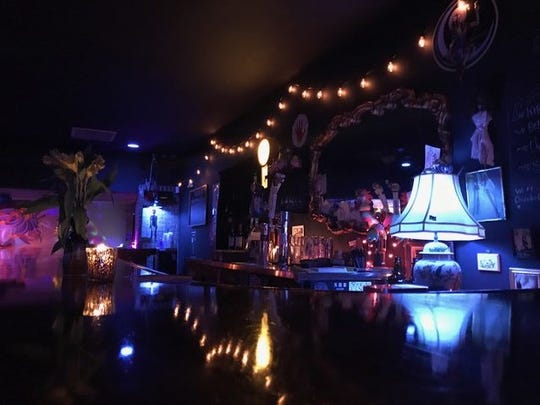
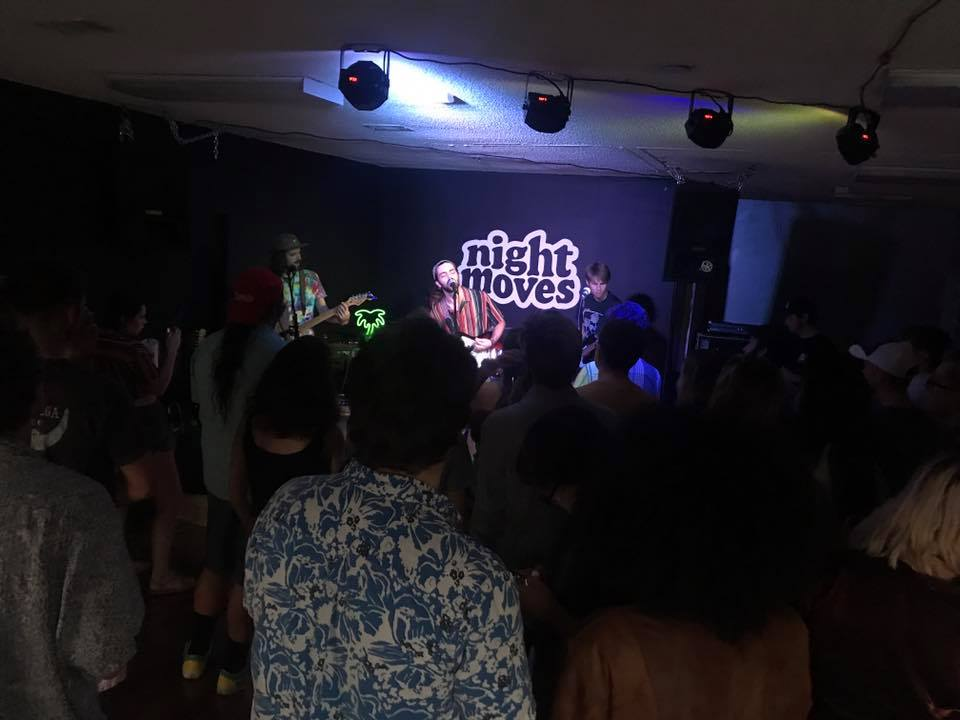
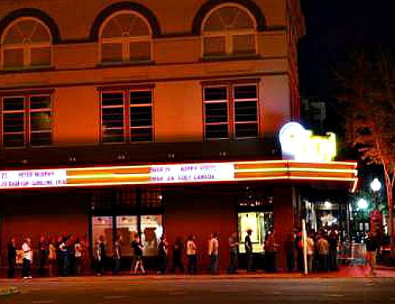

Chizuko

Chizuko has been around for a few years and has yet to disappoint. Stylish atmosphere, friendly staff, good food and drinks, and a variety of events ranging from trivia nights to heavy metal shows make it a prime hang out for local scenesters.
To learn more, visit their Facebook page.
Night Moves

Night Moves finally fills the void of an all ages space for everyone to be able to enjoy local music without alcohol coming into the equation. Open for shows and event rental, Night Moves is truly a DIY space meant for the community.
To learn more, visit their Facebook page.
Vinyl Music Hall

Vinyl Music Hall is the largest showspace in the city, and it has hosted tons of great events. Bands like Dinosaur Jr, Melvins, Municipal Waste, AJJ, Clutch, Shakey Graves, EyeHateGod quickly turn the floorspace into a mosh pit. Make sure to bring some extra cash for drinks though, as they are pretty steep here.
To learn more, visit their website.